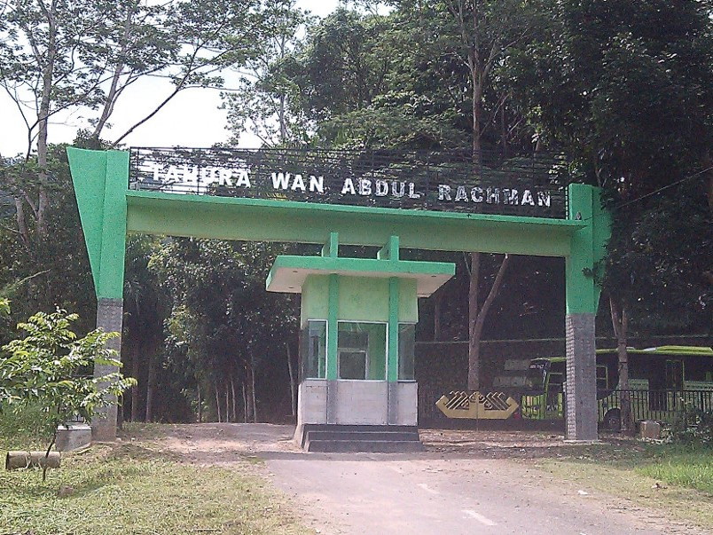
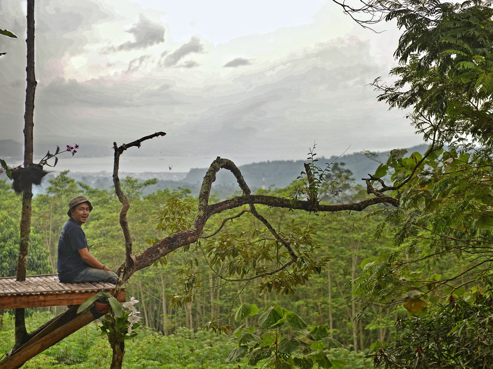
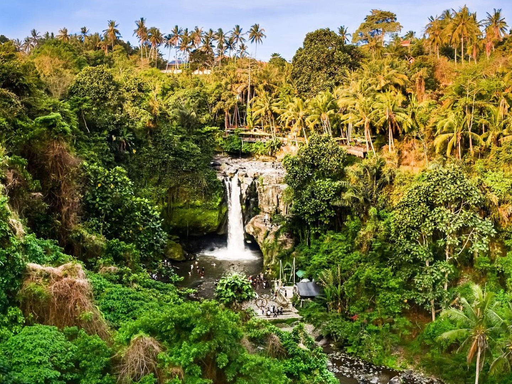
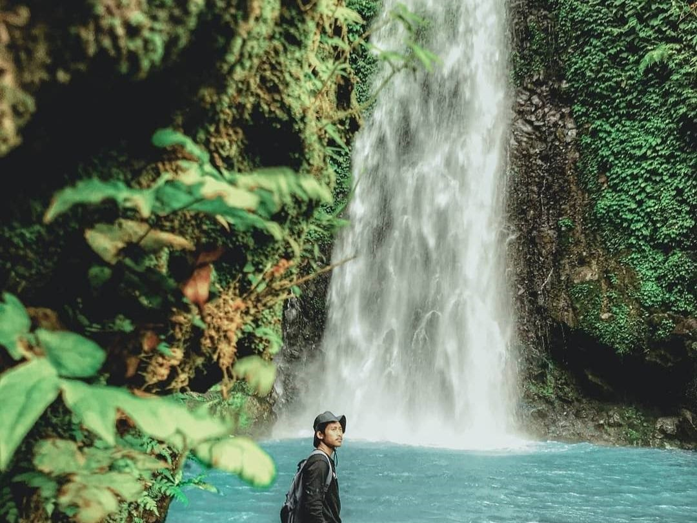
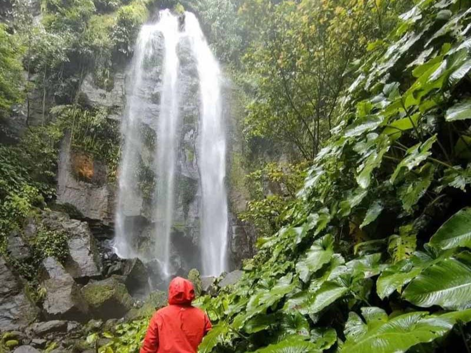

Taman Hutan Raya Wan Abdul Rahman

Taman hutan raya merupakan kawasan pelestarian alam untuk tujuan koleksi
tumbuhan dan atau satwa yang alami atau buatan, jenis asli dan atau bukan asli,
yang dimanfaatkan bagi kepentingan penelitian, ilmu pengetahuan, pendidikan,
budaya, pariwisata dan rekreasi (UU No. 5 Tahun 1990). Taman Hutan Raya Wan
Abdul Rachman (Tahura WAR) ditetapkan melalui Keputusan Menteri Kehutanan
dan Perkebunan RI Nomor: 679/Kpts-II/1999, 1 September 1999 memiliki luas
22.249,31 Ha dengan potensi sumber daya alam yang terdapat didalamnya berupa
keanekaragaman tumbuhan dan satwa, objek wisata alam, perbukitan dan
pegunungan serta sungai dan anak sungai didalamnya merupakan wilayah
kawasan hutan yang mempunyai karakter dan fungsi strategis dalam menunjang
pembangunan di wilayah Provinsi Lampung (Dinas Kehutanan Provinsi
Lampung, 2009).
Hutan pendidikan merupakan wahana bagi masyarakat khususnya pelajar,
mahasiswa dan peneliti untuk mempelajari hutan dan hubungan timbal balik antar
komponen ekosistemnya. Hutan Pendidikan Konservasi Terpadu (HPKT) berada
di dalam kawasan Taman Hutan Raya Wan Abdul Rachman (Tahura WAR).
Hutan pendidikan ini merupakan wujud dari perjanjian kerjasama antara Dinas
2
Kehutanan Provinsi Lampung dengan Fakultas Pertanian Universitas Lampung
dengan luas 1.143 ha (UPTD Tahura WAR, 2009).
Hutan Pendidikan Konservasi Terpadu Tahura Wan Abdul Rachman mempunyai 2
blok yang terdiri dari Blok Lindung dan Blok Perhutanan Sosial. Pada Sub Blok
Lindung umumnya berada pada daerah perbukitan dan didominasi oleh pohon-pohon
kehutanan, sedangkan Sub Blok Perhutanan Sosial merupakan areal kawasan yang
dikelola oleh masyarakat dan dijadikan lahan usaha pertanian, tanaman semusim
dan pemeliharaan tanaman komoditas perkebunan seperti kopi, cokelat dan
tanaman buah-buahan (UPTD Tahura, 2009).
Objek Wisata Taman Hutan Raya Wan Abdul Rahman

Daya tarik obyek wisata alam yang cukup beragam, seperti pemandangan alam Teluk Lampung yang terdapat juga 7 (tujuh) buah air terjun, yang sangat menarik adalah pemandangan Kota Bandar Lampung di waktu malam. Tujuh buah Air Terjun di lokasi tahura ini yaitu, Air terjun Sinar Tiga yang memiliki ketinggian 70 m dengan lebar 6 – 10 m, air terjun Gunung Minggu yang digunakan oleh pengunjung sebagai shower alam, air terjun Talang Rabun memiliki tinggi 30 m, air terjun Tanah Longsor 35 m, air terjun Penyairan 35 m, air terjun Bidadari 20 m dan air terjun Talang Mulya 30 m.
Air Terjun Sinar Tiga

Air terjun ini masuk wilayah kerja Taman Hutan Raya (Tahura) Wan Abdul Rahman (WAR) di bawah Dinas Kehutanan Provinsi Lampung. Dari Dusun Sinar Tiga, kamu akan merasakan perbedaan suasana saat memasuki hutan yang masih rapat dan rindang. Sebelum area hutan, kamu akan melewati kebun kopi milik warga. Saat memasuki hutan, kamu akan berjalan di antara pepohonan tinggi. Menjadi hiburan tersendiri menjelang tiba di air terjun. Sudah bisa menjadi kegiatan ‘healing forest’ yang menyenangkan.
Ketinggian air terjun ini sekitar 30an meter. Membuatnya menjadi sebuah atraksi wisata yang indah. Di musim hujan debit air akan lebih besar dibanding saat musim kemarau. Sangat jarang pengunjung yang berani bermain air persis di jatuhan airnya. Derasnya air terjun bisa terasa menyakitkan saat terkena kepala dan tubuh. Juga untuk berjaga-jaga ada bebatuan yang jatuh terbawa aliran air.
Air Terjun Talang Rabun

Air Terjun Talang Rabun adalah air terjun dengan tinggi sekitar 30 meter yang berada di dalam Taman Hutan Raya (Tahura) Wan Abdul Rachman Lampung. Suasananya asri dan alami, karena jauh dari pemukiman padat penduduk. Air terjun ini berada di arah selatan puncak Gunung Betung atau arah barat daya dari pusat Kota Bandar Lampung.
Dari sisi kehutanan, air terjun ini berada di dalam kawasan Taman Hutan Raya (Tahura) Wan Abdul Rachman, Dinas Kehutanan Provinsi Lampung. Dari sisi wilayah administratif, air terjun ini masuk Kabupaten Pesawaran, Provinsi Lampung.
Air Terjun Tanah Longsor

Air Terjun Tanah Longsor bisa menjadi salah satu rekomendasi bagi Anda yang hobi traveling spot-spot wisata alam. Lokasi Air Terjun Tanah Longsor sendiri berada di Padang Cermin, Kabupaten Pesawaran, Lampung. Air terjun ini dapat ditempuh dalam waktu 1 jam dari pusat Kota Bandar Lampung. Rute untuk menuju Air Terjun Tanah Longsor berawal dari arah Kota Bandar Lampung. Anda hanya perlu mengikuti satu arah jalan dari Bandar Lampung menuju ke Pantai Mutun hingga Pantai Klara. Harga tiket masuk Air Terjun Tanah Longsor ini belum dikenakan tarif alias gratis. Hal ini mengingat Air Terjun Tanah Longsor masih asri dan hanya dikelola dengan warga sekitar saja. Namun, bukan berarti Anda tidak perlu menggocek kantong untuk dapat mencapai tempat wisata ini. Pasalnya, kendaraan yang Anda bawa perlu dititipkan kepada warga sekitar. Tak perlu khawatir, kendaraan Anda pasti aman. Biasanya wisatawan hanya memberi iuran sebesar Rp5 ribu sampai dengan Rp10 ribu per kendaraannya.